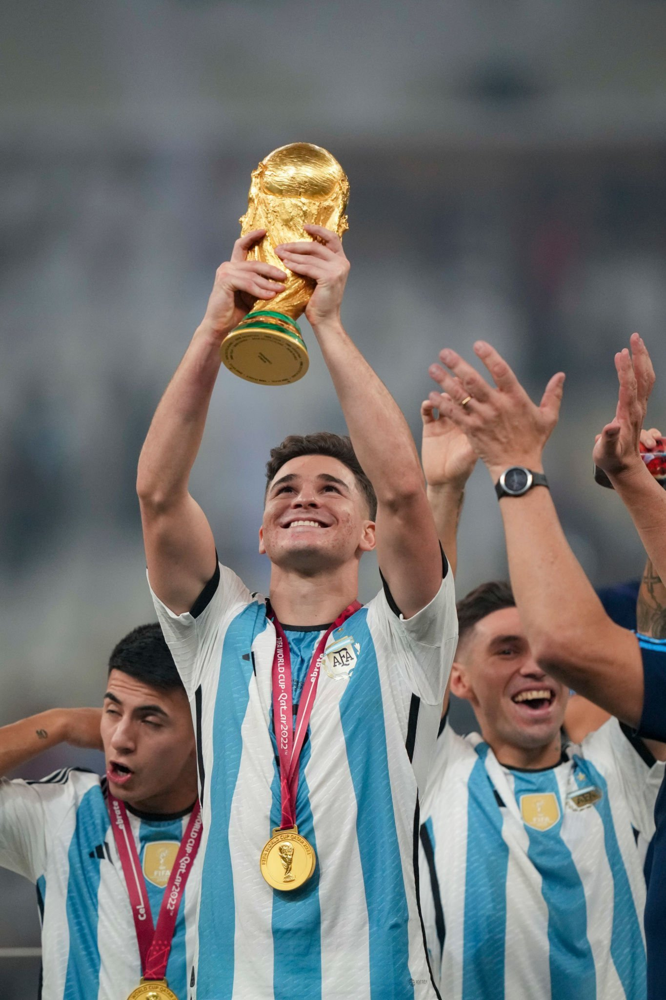

Julian Álvarez is an Argentine professional football player known for
his versatility in the attacking positions, quickness, and technical skills.
He is a young talent who plays for Manchester City and has shownproficiency
in scoring goals and creating chances for his team.

Julian Álvarez stats in the World Cup:
Played matches: Five Matches plus two as a sub.
Shots on target: 9 in total but 8 of them on target.
Goals scored: 4 goals and 2.55 xG.
Passes: averaged 18 passes per match with a pass completion rate of 79%.
Assists: 0 assists in this area.
Player rating: Average in the competition 7.30 Infogol rating.
MVP: 2 of the 7 matches he was the best player.